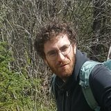

Research themes
Waterscapes & aquatic insects
Emerging aquatic insects and the services streams provide to adjacent farmland.
Urban ecology & climate
Heat islands, microclimate and arthropod communities in cities.
Citizen science & monitoring
Participatory monitoring schemes and the quality of their data.
Biomonitoring
Biological indicators to assess restoration, management and human impacts.
Interdisciplinarity
Working with law, social and climate sciences to support territorial decisions.
In video
Click to play, YouTube only loads when you press play.
Latest publications
Current supervision
The expansion of the European beaver in France: how to model its distribution and its dams to better understand and anticipate its consequences? (2026–2029)

Distribution of aquatic insects in landscapes: towards a regional approach to ecosystem services for agriculture in Brittany (2025–2028)

The location of solar installations faced with conflicting legal requirements - The example of solar panel installations along roads (2025–2028)

Development of a multi-parameter indicator of the impact of ground-mounted solar power plants (2025–2026)